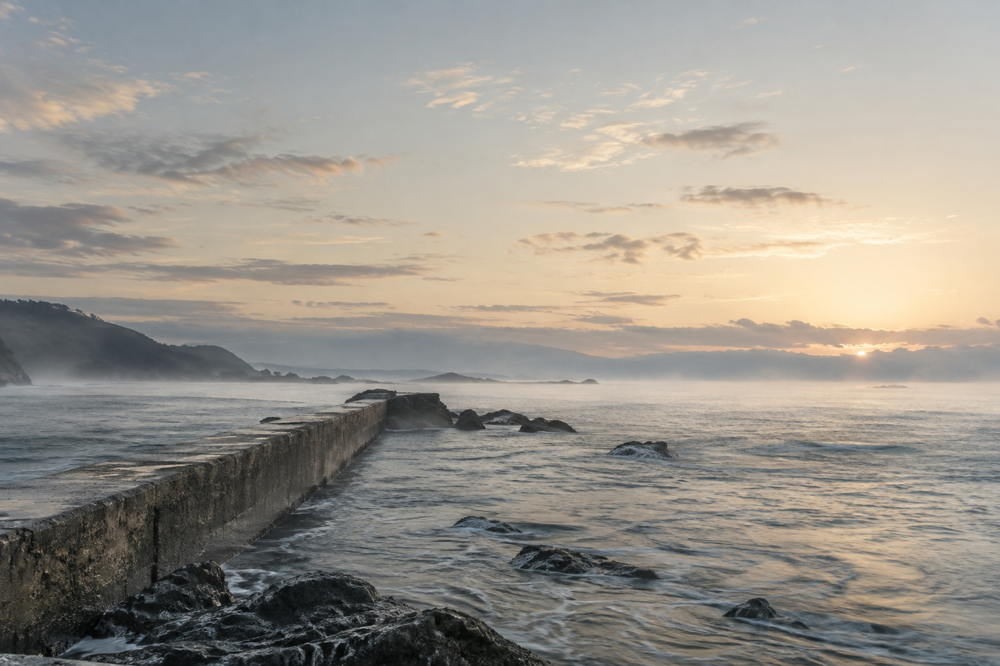

让图像居中
白纸、墨灰、小字号图注。单图、双图和组照保留完整比例，满版页承担少量强烈的视觉停顿。
留白与靠近
横幅景色与竖幅建筑交替。摄影随笔提供停顿，重复出现的影像形成回声。
三种纸面，一条次序
竖版、横版与 A4 各自调整图幅。手机和 EPUB 将组图依次展开，保留原图与图注。
扩篇 · 黑白、浓色与不同影像风格
新增黑白栈桥与旋梯、朱红建筑、暖橙静物、霓虹夜景、青绿泳池、浓绿森林、粉彩盐田、运动模糊和蓝晒风格习作。以下十二页来自新增章节，包含单图、满版、双图、组照和长篇札记。

扩篇 · 横版色彩序列

扩篇 · A4 图像与文字

原有影像 · 竖版实际书页

翻页之间

横版 · 实际书页

A4 · 实际书页